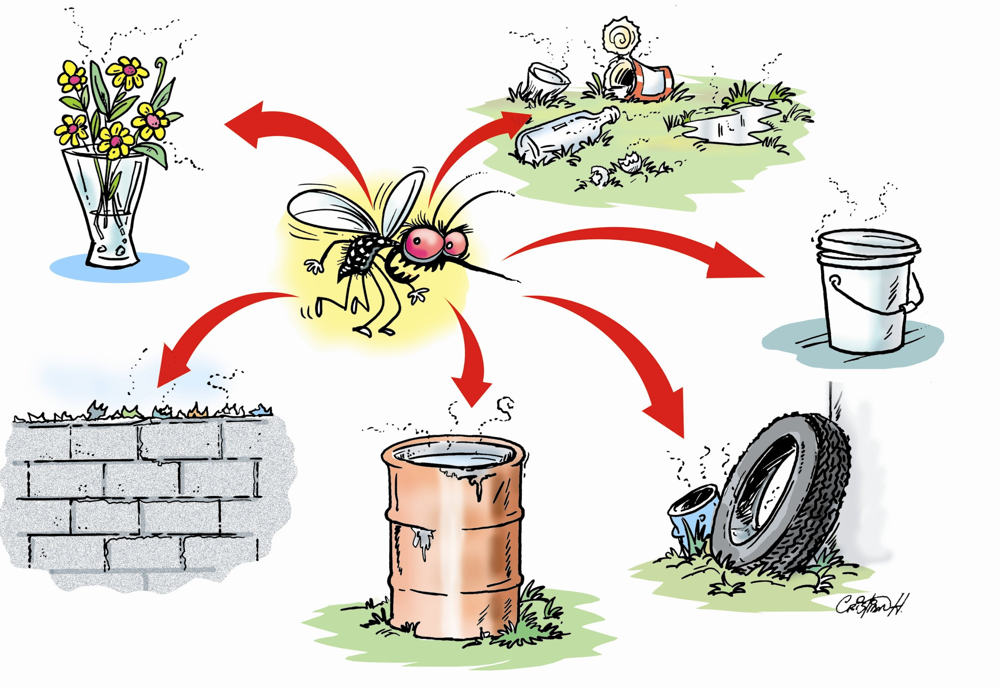

Evitar la acumulación de agua en recipientes donde los mosquitos puedan depositar sus huevos. Esto incluye neumáticos, botellas, baldes, floreros y cualquier otro objeto que pueda almacenar agua.

Aplicar repelente de insectos en la piel expuesta y utilizar ropa de manga larga y pantalones largos para minimizar la exposición a las picaduras de mosquitos.
Colocar mosquiteros en puertas y ventanas para prevenir la entrada de mosquitos en el hogar y reducir el riesgo de picaduras.
En áreas con alta acumulación de agua estancada, es recomendable desinfectar la zona con insecticidas aplicados por profesionales capacitados para eliminar las larvas y los mosquitos adultos.
Informar a la comunidad sobre las medidas preventivas y la importancia de eliminar posibles criaderos de mosquitos para reducir la propagación del dengue.